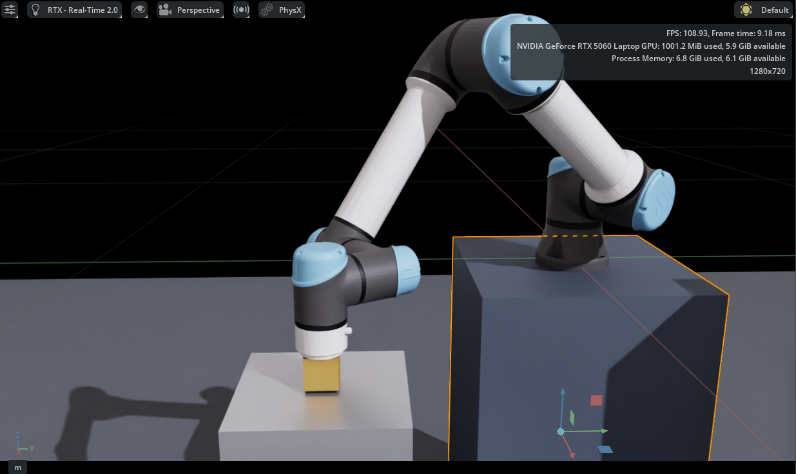
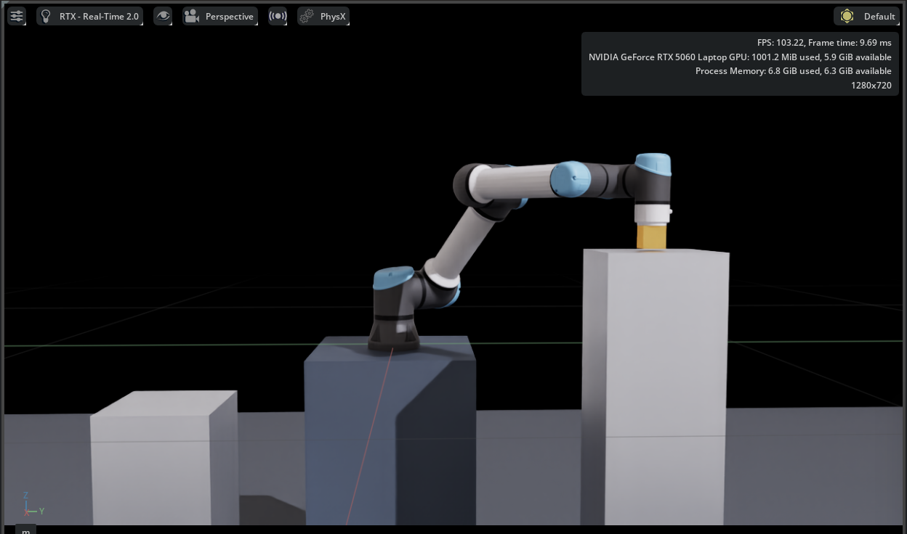
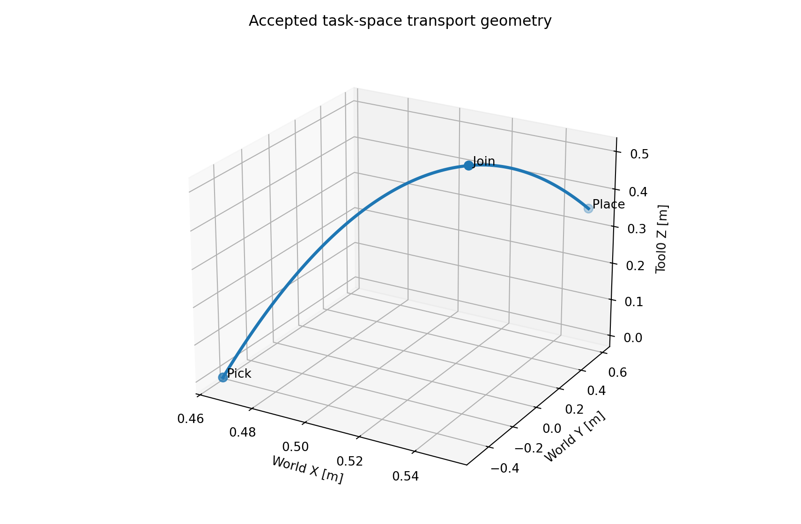
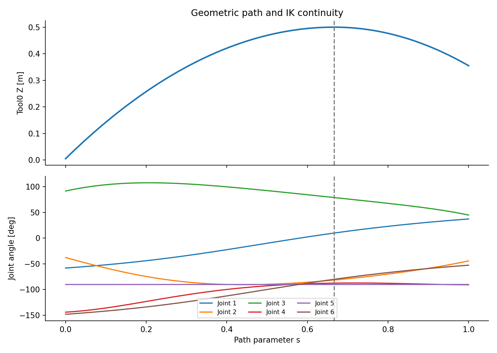
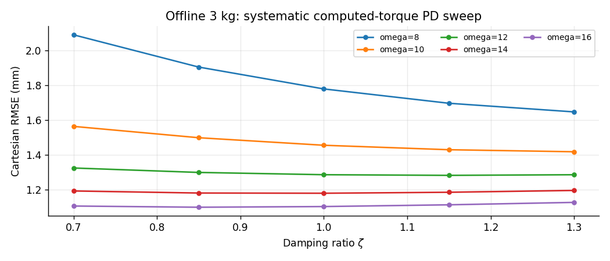
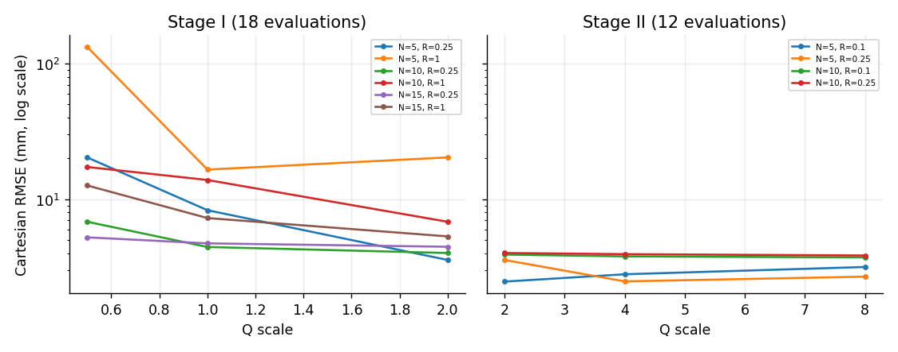
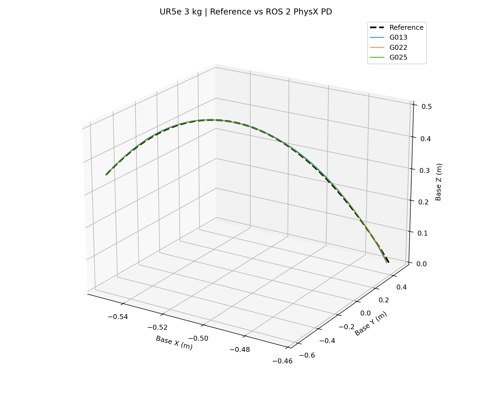
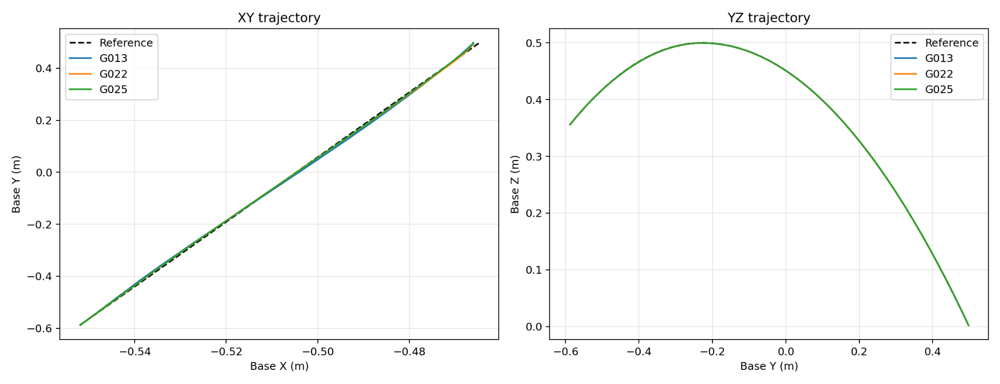
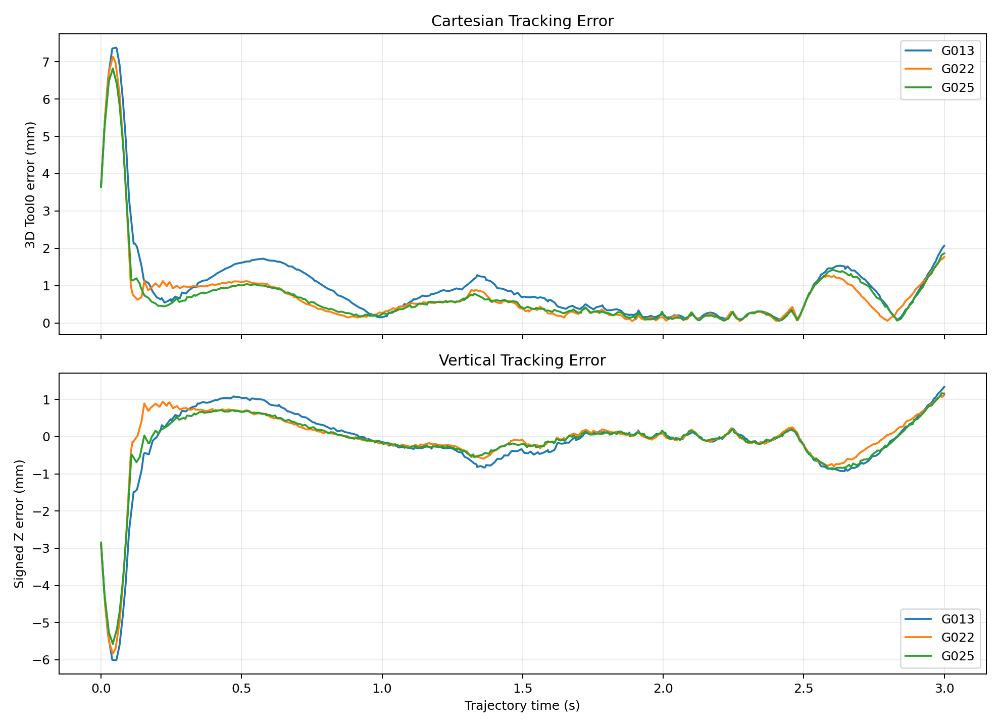
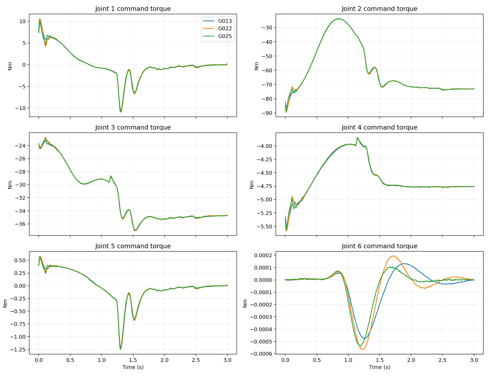

UR5e Payload Research · Transportation and Nominal Control
UR5e Heavy-Payload Transport & Control
A physics-based Cartesian transportation benchmark connecting workspace constraints, two-parabola trajectory design, computed-torque PD versus MPC selection, and independent ROS 2–Isaac Sim validation before learning is introduced.
View project source on GitHub →
Video will be embedded here after publication.
Reserved for the UR5e Cartesian transport demonstration, including the accepted trajectory and ROS 2–PhysX controller execution.
1. Task-Driven Workspace Design
Instead of prescribing an arbitrary set of joint angles, this study defines a transport mission between two workstations. The pick target uses approximately 80% of the nominal horizontal reach and the place target approximately 95%. The elevated destination introduces a 350 mm difference in tabletop height. The payload is rigidly attached, allowing the investigation to isolate free-space transportation dynamics rather than grasp acquisition or release.
| Task quantity | Pick | Place |
|---|---|---|
| Tool0 position (m) | (0.4648, −0.4959, 0.0050) | (0.5520, 0.5889, 0.3550) |
| Tabletop height (m) | −0.050 | 0.300 |
| Horizontal distance / nominal reach | ≈ 0.80 | ≈ 0.95 |


2. Three-Second Two-Parabola Cartesian Reference
The reference couples continuous horizontal motion with an ascent and descent formed by two parabolic vertical segments. The path is continuous in position and first derivative but changes vertical second derivative at normalized progress s = 2/3. A nonuniform time law reduces the progress rate near that curvature transition; it does not eliminate the acceleration discontinuity mathematically.
The prescribed task lasts 3.0 s, with the join occurring at approximately 1.7944 s. Peak recorded joint speed is approximately 71.78°/s, below the cited 180°/s manufacturer maximum. This is a reference-feasibility result, not a measured hardware response.


3. Nominal-Controller Screening: PD and MPC
Two model-based controller families were evaluated under common reference conditions. Computed-torque PD uses reference inverse dynamics and current-state tracking feedback; locally linearized MPC optimizes correction effort over a finite horizon with constraints on the complete commanded torque. The comparison tested 25 PD configurations and 30 MPC configurations, rather than choosing gains solely by intuition.
| Offline candidate | Cartesian RMSE | Engineering observation |
|---|---|---|
| PD G022 | 1.099 mm | Lowest offline PD Cartesian error |
| PD G025 | 1.127 mm | Stronger terminal damping; selected for PhysX comparison |
| MPC best screened | 2.470 mm | Best within tested local linearized MPC grid |


4. Independent ROS 2–PhysX Deployment
The transfer to Isaac Sim was treated as an independent experiment rather than a visual demonstration of offline trajectories. The six-joint effort command was published on /joint_command, with joint state returned on /joint_states. The simulation used a nominal 2 ms PhysX step and a requested 20 ms ROS controller interval; these were not proven to form a perfectly synchronized hard real-time loop.
Before robust tracking could be measured, gravity preload, active return, a two-second stabilization gate, and controlled trajectory arming were introduced. Without effective holding effort, the manipulator moved under gravity even though the intended reference had not begun. This was a commissioning issue, not evidence that the nominal dynamics equations were intrinsically incorrect.


5. Nominal Controller Validation and G025 Selection
The final G025 controller used Kp = 256 and Kd = 41.6. G022 ranked slightly better in the offline PD sweep, but G025 achieved the lowest recorded Cartesian RMSE among the three selected controllers in PhysX. The difference illustrates why the final controller was not chosen by numerical search alone.
| Controller | PhysX Cartesian RMSE | Joint RMSE |
|---|---|---|
| G013 | 1.4539 mm | 0.170° |
| G022 | 1.2335 mm | 0.125° |
| G025 | 1.1951 mm | 0.115° |


6. Payload Mismatch and the Motivation for Learning
The nominal 3 kg model produced highly accurate tracking when the plant also carried 3 kg. Retaining that model while increasing actual payload to 5 kg raised the measured PhysX Cartesian RMSE to 10.560 mm, compared with 1.195 mm in the matched condition. The controller remained mathematically intact, but its feedforward calculation no longer represented the actual loaded dynamics.
This result motivates the next project: retaining a functioning nominal controller and investigating whether bounded learned compensation can address the particular discrepancy rather than replacing established physics.
7. Engineering Boundaries
Project Resources
Source Code & Experiment Records
UR5e analytical modeling, nominal control, ROS 2–PhysX implementation, residual RL training, evaluation routines, and recorded experiment data.
Open Part 3 on GitHubTechnical Reports
The complete integrated investigation and a concise engineering version are provided as two separate PDF files.
Condensed ReportFull ReportProject by Sooyong Kim · Robotics & Autonomous Systems Portfolio